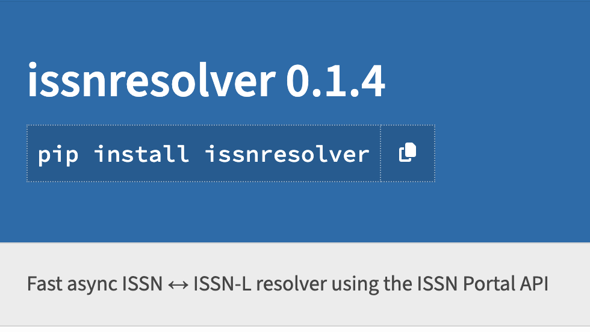
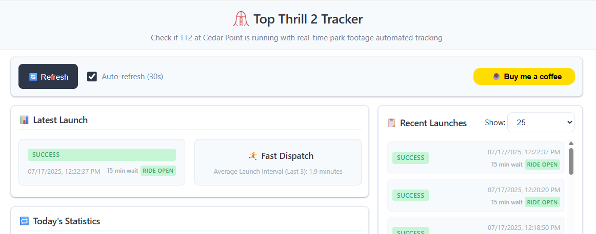
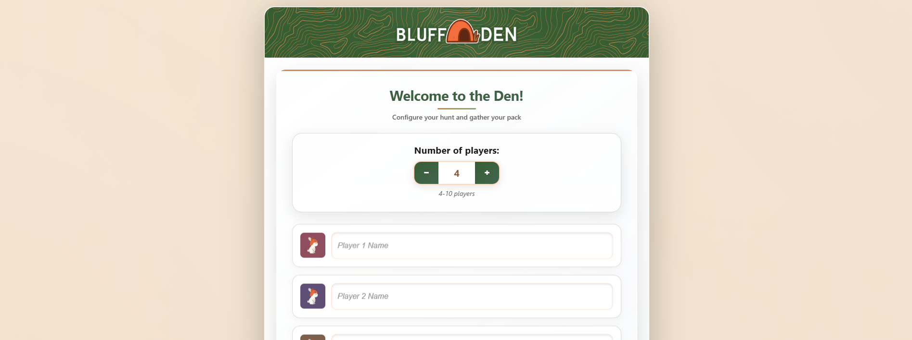
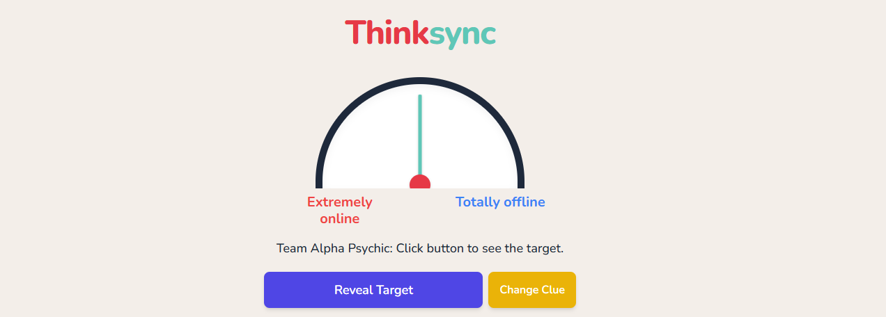

Research Projects

Predicting the Unpredictable: Machine Learning for Lead Time Forecasting
Developed ML and deep learning models to predict supply chain lead times for a large manufacturing company. Presented research poster at 2025 INFORMS Analytics+ National Conference.

Machine Learning to Map Grief Stages for Military Survivors
Collaborated with TAPS to develop ML classification models predicting grief stages from survey responses, achieving 89% accuracy. Presented at Purdue Fall 2024 Undergraduate Research Conference.
Purdue's Highly Prestigious Awards Historical Database
Built a web scraping pipeline to collect 90,000+ award records with metadata standardization. Findings presented to Association of American Universities (AAU) and multiple Institutional Research conferences.
Professional Projects

issnresolver - Python Package
Python package for easy lookup across ISSN variations (ISSN-L, ISSN, eISSN) from ISSN portal. Built in 2 days and published on PyPI to streamline journal identifier navigation for researchers and librarians.
PubCrawler
Web application that aggregates academic publications from Scopus, Web of Science, Google Scholar, and ORCID to provide researchers with unified publication lists and coverage analysis. Built with Python backend and HTML/JavaScript frontend.
Hobby Projects

OnTheWay: AI-powered Road Trip Planner
Road trip planning webapp using Streamlit and Google's Gemini API. Generates personalized itineraries by interpreting user preferences and travel constraints to create optimized routes. Developed in 13 days as a solo project.

Top Thrill 2 Launch Tracker
Real-time tracking website for Cedar Point's Top Thrill 2 coaster. Monitors livestream to provide status updates and received significant attention from the coaster community on Reddit. Built with Python/FastAPI backend on DigitalOcean.

Bluff Den
Web-based party game for 4-10 players featuring deception and deduction mechanics. Developed as a Progressive Web App with responsive design and dynamic animations. Features client-side JavaScript for smooth gameplay without server dependencies.

Thinksync
Social party game where players guess points on subjective spectrums using clues from teammates. Features AI-generated custom spectrum pairs using Google's Generative AI. Built with Python/FastAPI backend hosted on Koyeb and TailwindCSS frontend.
Clue Stitch
Cooperative party game for 3-7 players where teams discover mystery words through one-word clues. Features duplicate clue invalidation and optional timers. Uses Google Gemini API to generate custom themed word lists via Python/FastAPI backend.